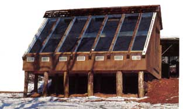

Those of you who are following our solar wood-drying kiln project (initially- presented in MOTHER N0. 89) are probably looking forward to further data concerning the success of our experimentation. which entails using the sun's energy to reduce moisture levels in freshly harvested lumber to a point of equilibrium with its environment.
Well, in this second installment, although we're prepared to offer reliable figures. we still can't promise that our kiln design will actually achieve its intended goal, simply because our two test batches (500 board feet each of oak and yellow pine) haven't yet completely given up their available moisture.
As you might imagine, the economic savings realized in solar drying is offset-to some degreeby the sheer unpredictability of Mother Nature; if there's less sunlight available over a period than was anticipated, the only option is to wait it out. Then again, as we explained last time, seasoning wood isn't all that simple a task, since the rate of moisture removal-be it fast or slow-directly affects the quality and serviceability of the finished product. In short, since we know that at this writing each of our sample charges should still give up about 8 percent more moisture (based on ambient temperature, relative humidity, and particular species), it's simply too early to determine with any accuracy whether or not our boards will have a successful seasoning.
RAIN, RAIN, GO AWAY
Traditionally, the Blue Ridge mountains of western North Carolina (where our kiln is located) experience a moderate climate. Cloud cover is the exception rather than the rule, but last summer our region endured an unusually stubborn rainy spell, which happened to coincide with our first instrumentated test, initiated in mid-June.
This extended circumstance affected our project in two ways: First, the relative humidity (a measurement of the amount of water vapor in the air compared to the maximum amount of moisture that the air could contain at a given temperature) was increased-even during showerless periods-by the fact that reduced ambient temperatures lessened the ability of the air to hold moisture.
Second, since our air distribution system is photovoltaically powered, the marked lack of direct sunlight effectively shut down the conditioning airflow that's critical to successful drying. (This was both a help and a hindrance: Though we didn't want moistureladen air passing through the wood stacks, stagnant air near its dew point was even less desirable because it promotes the formation of mold, a condition we had to contend with in our freshly cut pine pile.)
Given those circumstances, though, our charges didn't fare too badly. We first loaded our full-dimension 1" X 6" X 12' red and white oak boards at an 82 percent moisture content (MC); then, six days later, we stacked an equal amount of yellow pine that had an average MC of 14 percent . For the next nine days, the sky was overcast, but the sun broke through intermittently over the following four.
During July, weather conditions were generally poor, but the ambient temperature increased enough to lower the relative humidity slightly; on the 13th of the month, a second PV panel was installed, in series, to boost airflow through the stacks. At this point, moisture content readings in both species of wood were well above 30 percent , though the "target" equilibrium level stood at about 14 percent or 15 percent .
On August 9th, after a promising week with only one rain shower of any duration, we were rewarded with a 29 percent MC reading in our oak, which was the first indication that the wood had expended its free moisture and was now giving up its bound water. Over a week later, the pine stack followed suit . . . and our last readings, toward the end of that month, indicated that both charges were within half a percentage of each other, hovering at about 22 percent .
SIMPLIFIED DOCUMENTATION
Normally, determining the moisture content of any given species of wood would be a timeconsuming process involving cutting a sample from the center of a typical board and comparing its weight to the heft of the same piece after it's been completely dried (in an ordinary microwave oven). The difference in weights is equal, of course, to the mass of the water in the wood, and this figure is divided by the sample's dry weight, then multiplied by 100, to arrive at the percentage of moisture present.
Equilibrium moisture content (EMC), on the other hand, changes with the relative humidity of the wood's environment (and its natural density), so species-specific charts have been developed that establish EMC fairly closely, based on given temperature and humidity.
Just explaining all this is enough to wear a person out, so we were quite pleased when Lignomat USA (14345 N.E. Morris Ct., Portland, OR 97230) provided us with one of their H 30 moisture-detection meters, which has made the task of daily analysis and record keeping a matter of a few minutes. Their lignometers calculate the wood's moisture content, based on direct-current electrical resistance measured between two pin electrodes placed 1-11/4 inches apart within the wood sample.
Not only does the instrument compensate for different wood species (some models also feature temperature-correction circuits), but it has an instant EMC monitor that receives its input from a cellulose wafer fixed in a sensor mounted within the kiln environment. This feature allows us to correlate humidity data taken with our sling psychrometer
At this point in our experimentation, the drying lumber looks OK . . . at least on the surface. But until it's stabilized with our local environment, we won't claim total success. So in our next issue, we hope-we'll be able to report on the real value of our sunpowered wooddrying kiln . . . and meanwhile we'll keep our fingers crossed that it doesn't rain too much!
|
 |
|
|